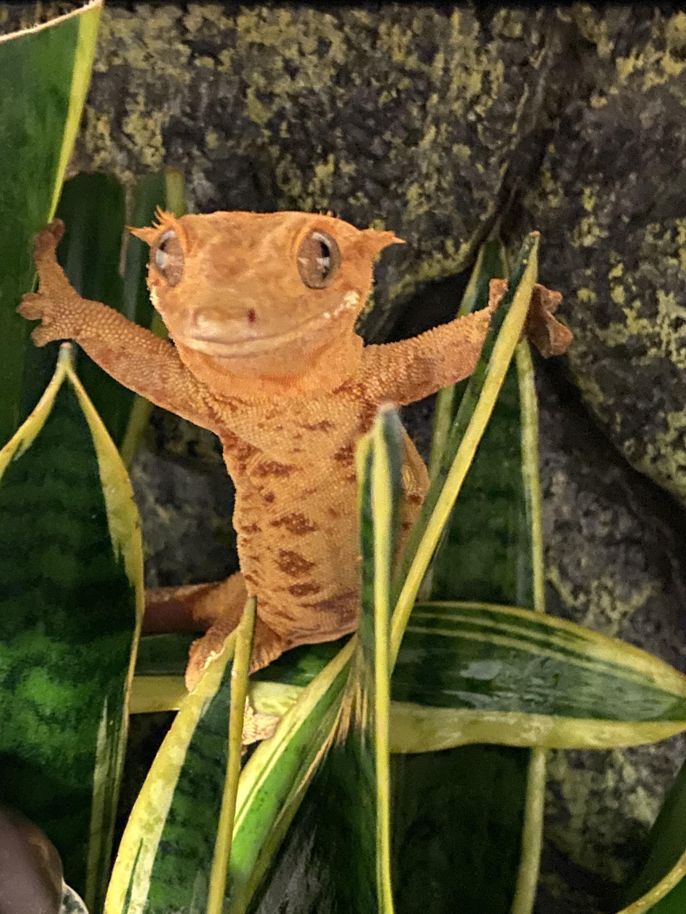
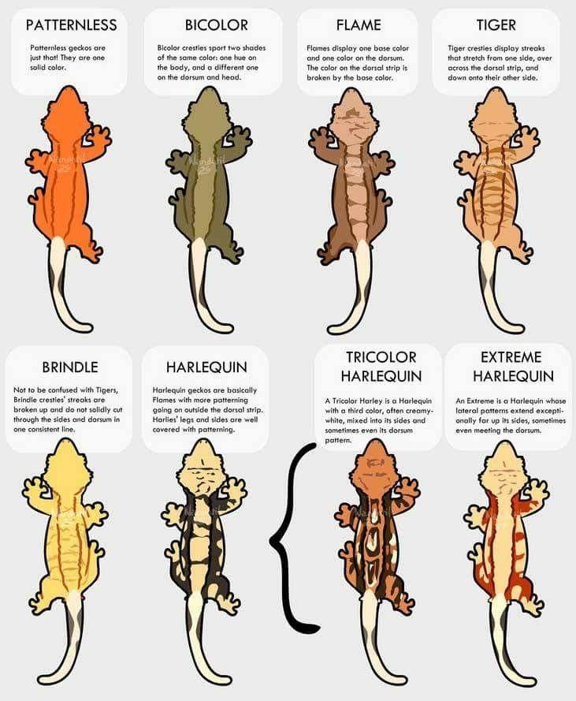
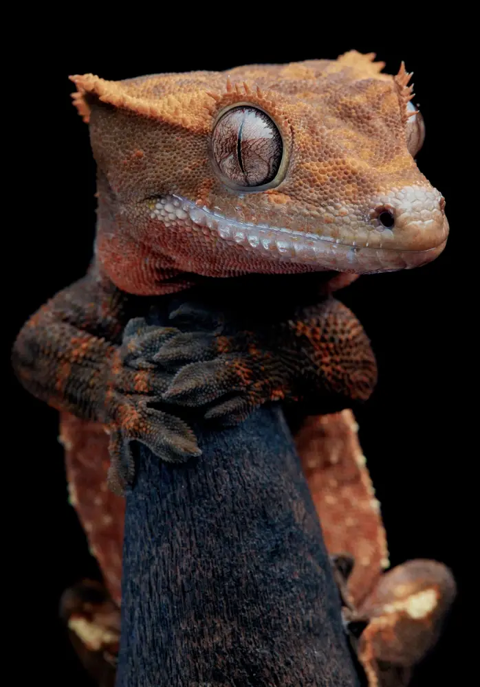
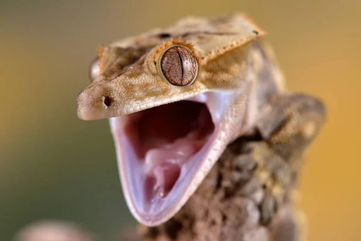

Who We Are
We’re Quinn and Cameron, two reptile lovers who have been caring for crested geckos for over 5 years. What started as a hobby quickly grew into a passion, and over time we realized just how difficult it can be for new keepers to find reliable, consistent care information.
After seeing countless beginners receive confusing or incorrect advice online, we decided to create a place where anyone can learn proper crested gecko care — clearly, simply, and confidently.
Our Mission
Our goal is to make accurate, accessible, beginner-friendly information available to everyone. Crested geckos are incredible animals, and they deserve the right environment, diet, and care to thrive.
Whether you're caring for your first gecko or you already have an established collection, we want to help you make the best choices for your animals. From feeding guides to enclosure setups to supply recommendations — we aim to cover everything a modern keeper needs.
Why Only Crested Geckos?
We specialize exclusively in crested geckos because we believe in focusing on what we know best. By dedicating our time to one species, we can provide deeper, more accurate, and more helpful guidance than broad reptile websites.
Crested geckos are unique — hardy, expressive, easy to handle, and perfect for keepers of all experience levels. They've been part of our lives for years, and we’re excited to share that passion with you.
What You’ll Find Here
This site offers everything a crested gecko owner could need:
• Beginner care guides
• Feeding and diet info
• Recommended supplies
• Enclosure setup tips
• Health and husbandry advice
• A growing community forum
We’re always expanding our resources as we learn more — and we hope this becomes the go-to spot for anyone entering the hobby.